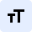
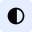
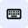

Configuración y Asistencia de Accesibilidad
Personaliza la experiencia visual y de navegación del portal para garantizar un acceso universal e inclusivo. Todas las modificaciones se conservan en tu perfil institucional.

1. Tamaño de Texto y Tipografía
Escala de lectura global
Tipografía de máxima legibilidad
Activa pesos visuales reforzados para mitigar fatiga visual y dislexia.
⌄

2. Contraste y Filtros Visuales
Garantiza umbrales ópticos de luminosidad para fotofobia o baja visión.
Perfil cromático de pantalla
Subrayar todos los enlaces y botones
Enfatiza de inmediato todo destino navegable interactivo.
Reducir animaciones de pantalla
Desactiva transiciones rápidas para prevenir mareos y sobreestimulación vestibular.

3. Navegación y Tecnologías Asistivas
Optimización para lectores de pantalla y movilidad reducida.
Foco de teclado visible de alto relieve
Aplica un contorno de alto contraste (3px) para rastrear la tecla Tab.
Optimización para lectores de pantalla
Soporte nativo semántico ARIA para NVDA, JAWS, VoiceOver y TalkBack.
Atajos de Teclado del Ecosistema GIDTIITEC
| Comando Teclado | Acción Institucional | Estado |
|---|---|---|
| Alt + 1 | Ir al portal de inicio GIDTIITEC | Habilitado |
| Alt + 2 | Saltar navegación e ir directo al contenido principal | Habilitado |
| Alt + 3 | Foco en el buscador global de proyectos y miembros | Habilitado |
| Alt + 4 | Abrir / cerrar panel flotante de asistencia rápida | Habilitado |